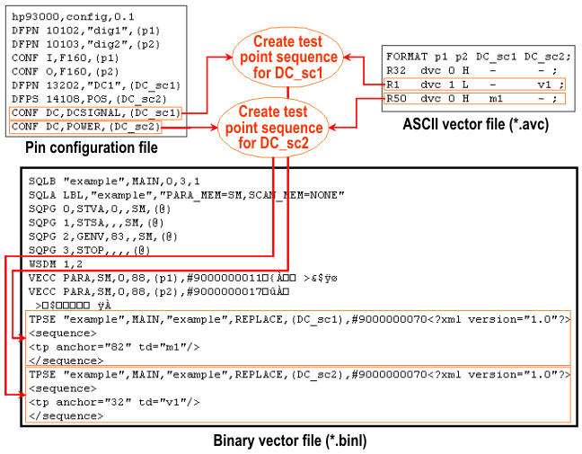

Defining test points
Test points connect test events to a logical vector of a pattern. Test events are instructions to the hardware to perform some action, for example, set the measurement range for a DC measurement or execute such a measurement. The vector with which the test event is associated by a test point is called its anchor. Test points can only be defined for pins that are associated with a DC Scale channel. Such pins are identified in the pin configuration file by their CONF command, which must specify POWER or DCSIGNAL as the operation mode of the pin.
In order to create a test point for a DC Scale pin, you must include this pin in the ASCII vector file. To define the anchor, specify the name of the test event in the respective row within the vector table. The test event must be defined with the DFTD command. This is done outside the ASCII Interface.
No digital waveforms can be sent to a DC Scale pin. Therefore all vector cells of a DC Scale pin that are not anchor cells must be filled with the "-" character. This is only a place holder, but it must be present. Furthermore, since no digital vectors are sent to the DC Scale pins, the timing translation ignores such pins.
Before the test event can be executed, its measurement data must be downloaded to the hardware. This requires a certain amount of time. To ensure that the data is actually present in the hardware, the vector translation expects that every anchor is preceded by at least 32 non-anchor vectors (this number is selected so that the time span is sufficient even for the minimum period length of 2.2 ns). If this requirement is not met, the vector translation issues an error message.
Example
